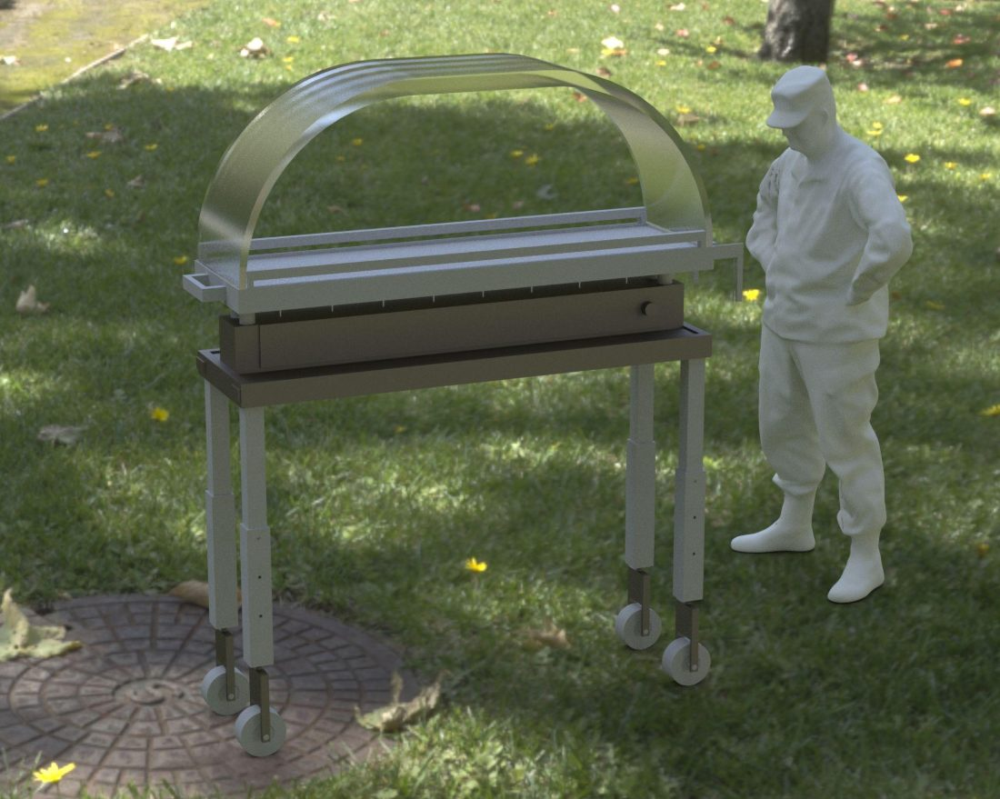

Mechanical design
Dynamic Rescuer: an all-terrain patient carrier
Stretchers are built for flat ground. Our team designed a modular system that carries an incapacitated person through urban disaster sites and wilderness terrain, and can switch between rolling and hand-carrying in seconds.

The brief
A multinational NGO working with the World Health Organization asked us to rethink how incapacitated people are moved. Traditional stretcher designs have barely changed in centuries and break down off flat ground: in rubble, mud, snow or rough trails. The system had to work in two situations, urban disasters and wilderness injuries, while staying comparable to existing solutions in durability and cost.
My role
- Research and analysis behind the design brief, users and requirements
- Building the detailed 3D model in SolidWorks
- Documenting the product development process in the design report
- Creating the team’s design plan and timeline so milestones stayed achievable
How we designed it
- Situation scan. Researched goals, environment, competing products, users and strategy, covering both paramedics (the people operating it) and patients (the people riding in it).
- Personas and use cases. Built six personas and their situated use cases, from a very short paramedic and a paramedic with anxiety to patients with physical disabilities or cognitive disorders, to surface real human-factors needs.
- Requirements. Turned those needs into situational and internal engineering requirements, for example a bed assembly of no more than 14 kg dry weight.
- Concepts to one design. Combined the best features of six initial concepts using a morphological chart, then mapped inputs, outputs and subsystems with a system diagram and interface matrix.
- Inclusive design check. Used the Cambridge Exclusion Calculator to estimate who each version would exclude on strength, dexterity and other demands, and changed the design to lower those rates.
- Detailed design. Produced sketches and a full set of CAD drawings, with every change tracked in a design change record across three design loops.
The design
- Roll it or carry it. The bed is a standalone assembly that clips onto the wheeled frame on circular rods. Where wheels can’t go, paramedics lift the bed off and hand-carry it, as they are trained to.
- Fits every operator. Height-adjustable legs and modular steering handles let short and tall paramedics both reach the controls, and mean patients don’t have to be lifted high or lowered far.
- Brakes in the grip. Each steering handle has a trigger in front of the grip that applies two brake pads per wheel mount.
- Built-in storage. A 73.1 L compartment in the frame holds a standard Canadian EMS trauma kit (about 42.8 L) with room to spare.
- Materials chosen for the job. A steel frame for strength (585 MPa tensile), a polyethylene bed and legs, natural rubber handles, and frame-mounted lights on user-replaceable lithium batteries rated from −20 to 60 °C.
- Designed around the patient. A full enclosing canopy protected patients from rain but could make patients with cognitive disorders feel trapped, so we redesigned it as a roof only.
- Quick to assemble. We kept fasteners to a minimum so a stressed operator can put it together fast.
What we had to fix along the way
Early concepts had underspecified brakes, no suspension (which made them sway on uneven ground) and no patient restraints. Each was logged as a design issue and resolved in later loops, alongside human-factors problems like controls that looked too similar and status displays that were hard to read in poor light.
Conclusion
The Dynamic Rescuer meets the brief’s core goal: one system that rolls where it can and is carried where it can’t, sized for the full range of paramedics and built around the patient. Its biggest decisions, like adjustable height, modular steering handles and a roof-only canopy, came from the personas and exclusion analysis rather than from geometry alone, and three design loops turned early safety gaps in braking, stability and restraint into resolved features.
The full design report and SolidWorks files belong to the team, so they aren’t posted here. Email me if you’d like to know more, or see the write-up on GitHub.
Back to all projects